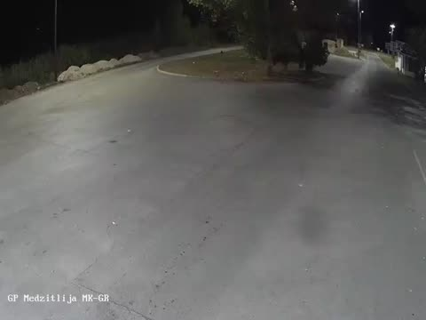

Medzitlija povezuje Severna Makedonija i Grčka, na putu E65, naspram Niki (GR). Gasolina kombinuje graničnu policiju, kameru uživo i (gde postoji) susednu stranu radi realne procene.
Na vrhu stranice su kamera uživo i trenutna procena čekanja za oba smera, plus gužva na mapi. Za poređenje svih prelaza idi na stranicu Granice.
Medzitlija povezuje Severna Makedonija → Grčka, naspram Niki (GR) na putu E65.
Da - Bogorodica, Dojran vodi ka istoj zemlji. Kalkulator rute na Gasolini poredi prelaze kad planiraš put, a stranica Granice direktno pokazuje koji je trenutno brži.
„Bez gužve“ pišemo samo kad je procena do 15 minuta. Od 16 minuta naviše prikazujemo broj i izvor iz kog dolazi. Kad mapa saobraćaja izmeri kolonu od 200 metara ili dužu, ne pišemo „bez gužve“ bez obzira na minute — izmerena kolona je jači dokaz od procene. A kad AMSS javi svojih podrazumevanih 30 minuta, a nijedan drugi izvor ne javlja ništa, pišemo da nema podataka umesto da prikažemo broj koji niko nije izmerio.